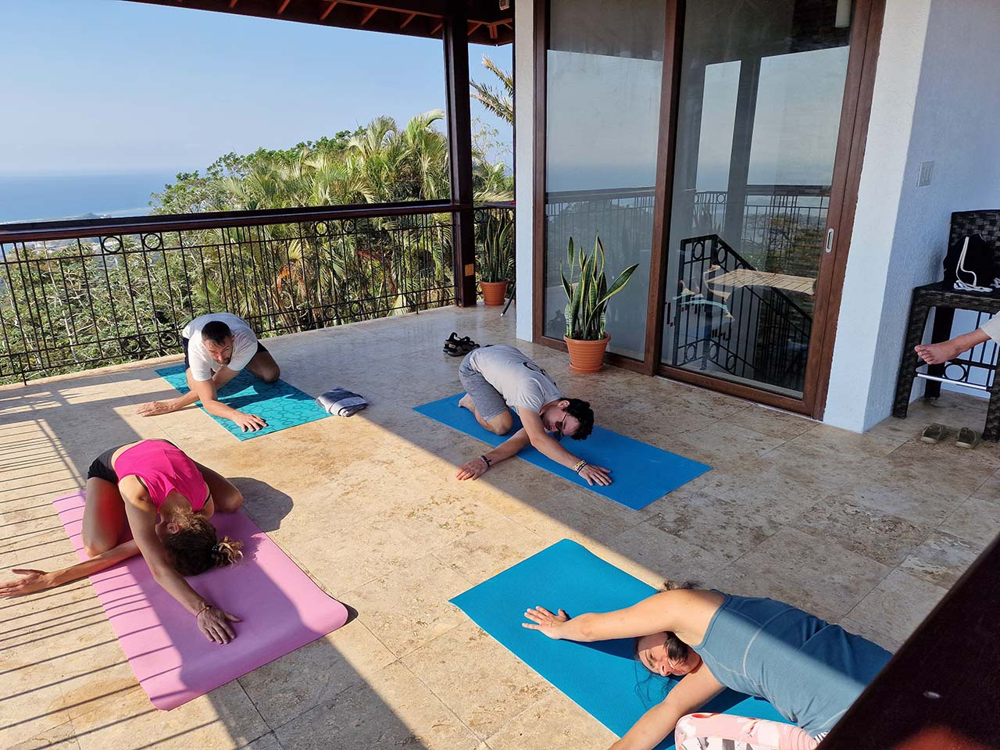
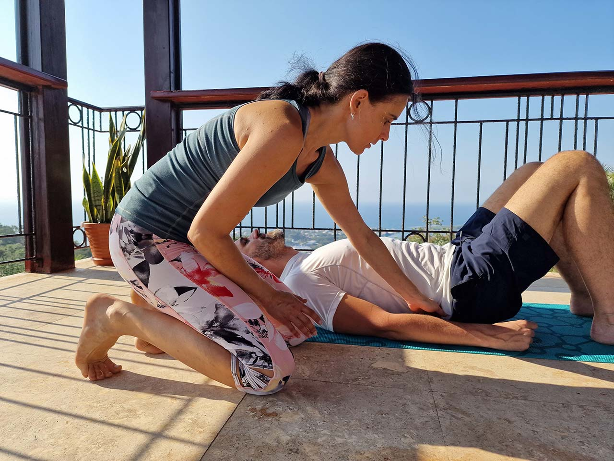
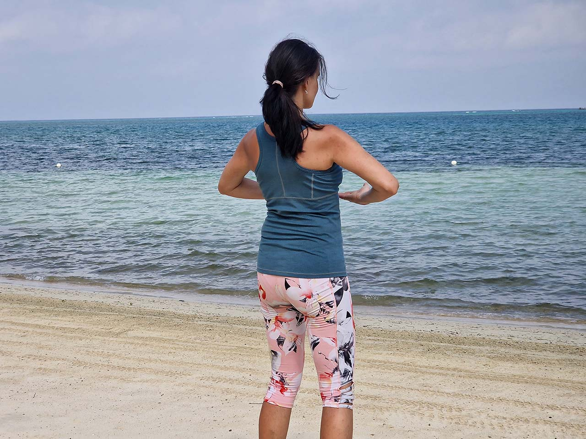
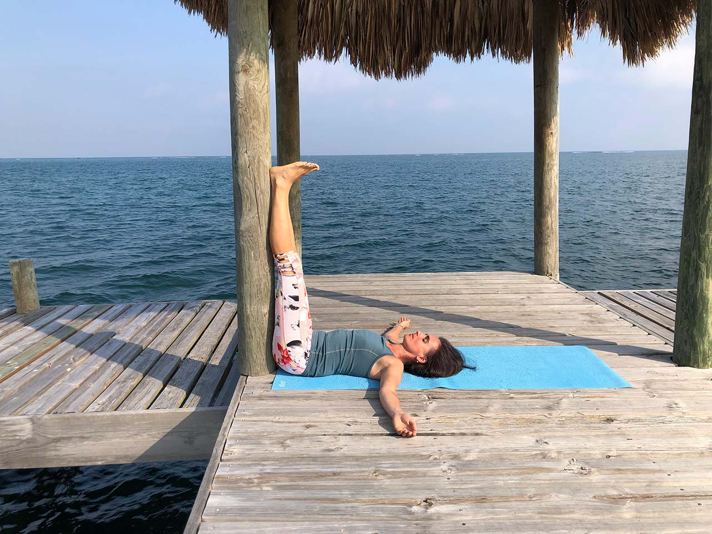

Ve své praxi se věnuji pomalejším jógovým stylům. Vnímám je jako vhodnou kompenzaci k rychlému životnímu stylu, který nás často odpojuje od našich skutečných potřeb a my se pak necítíme dobře a ani nevíme, proč. Jóga nám pomáhá najít cestu k sobě a žít naplněný život. Jednoduše být šťastný, což vám z celého srdce přeji. Vyberte si svůj jógový styl.

Jóga pro začátečníky
Jsem ráda, že jste se rozhodl/la začít svou jógovou cestu. V lekcích pro začátečníky se zaměřuji na správné držení těla, procvičování svalů a dosažení větší uvolněnosti v každodenním životě. Nebojte se, budeme krok za krokem postupovat a pomůžu vám překonat začátečnické úskalí.
Bez ohledu na vaši fyzickou kondici či předchozí zkušenosti, se naučíte správné provedení ásan, což jsou jógové pozice. Budeme se postupně seznamovat s různými pozicemi a postupně si je osvojíte. V lekcích používám jógové pomůcky, které vám pomohou přizpůsobit cvičení vašim individuálním potřebám a možnostem.
Benefity: Zlepšení celkové fyzické kondice. Cvičení vhodné i při určitých zdravotních omezeních po konzultaci s lékařem nebo fyzioterapeutem. Uklidňuje a harmonizuje tělo a mysl.
BSkupinová lekce: úterý 18:45-19:45, Studio Jogamy
Registrace: www.jogamy.cz
Individuální lekce
Stalo se vám, že jste přišli na lekci jógy pro začátečníky a některé pozice jste nemohli zacvičit? Máte omezení v pohyblivosti kolen, kyčlí nebo zamrzlé rameno? Bolí vás záda? Správně se domníváte, že některé jógové pozice pro vás momentálně nejsou vhodné nebo je potřebujete přispůsobit vašemu momentálnímu fyzickému stavu. Individuální lekce je, pro vás ideálním řešením pro bezpečnou jógovou praxi. Je tady prostor pro konzultaci a přizpůsobení pozic k vašemu fyzickému stavu. Zařazují se cviky z fyzioterapie, učíte se správne pohybové vzorce, využíváme míčkování na uvolnění zatuhlejších svalových partií. Cvičí se s pomůckami až do doby, než se dostanete o krůček dál. Součástí lekce je vedení k vnímání sebe sama a závěrečná relaxace pro uklidnění nervového systému a mysli.
Benefity: Zlepšení celkové fyzické kondice. Cvičení vhodné i při určitých zdravotních omezeních po konzultaci s lékařem nebo fyzioterapeutem. Uklidňuje a harmonizuje tělo a mysl.
Individuální lekce: úterý 17:30-18:30, Studio Jogamy, nebo po domluvě v jiný čas.


Jóga pro začátečníky - Čchi-kung a jóga
Lekci začínáme jednoduchým čchi-kungovým cvičením, za účelem rozproudění energie čchi v těle. Následně cvičíme jógové pozice. V průběhu cvičení můžeme ošetřovat vybrané akupresurní body. Na rozdíl od jin jógy, která je čistě v pomalém duchu, obsahuje tato lekce i dynamičtější prvky a v pozicích se setrvává kratší dobu než v jin józe, cca na 5-10 nádechů. Lekci ukončujeme relaxací.
Benefity: propojením čchi-kungu a jógy získáváte komplexnější ošetření těla na fyzické a energetické úrovni. Zdravotní zlepšení můžete pocítit nejenom v oblasti pohybového aparátu, ale i v ostatních orgánových soustavách, například odstranění trávicích potíží, u žen pomoc při hormonální nerovnováze.
Skupinová lekce: pondělí (18:25-19:25) a (19:30-20:30), Jablíčkov
Restorativní jóga
Restorativní jóga se hodí pro ty, kteří se potřebují naučit vědomě relaxovat. Je to pasivní styl jógy. Je vhodná jako doplněk při různých psychických potížích. Pomáha při úzkosti, strachu, únavě, při stresu, při přepracování, potížích s usínáním. Je prospěšná při hormonální nerovnováze ( pms, potíže v menopauze, bolestivá menstruace) a bolestech zad.
Lekce obsahuje menší počet pozic, ve kterých se může zůstávat 5-10 minut, popřípadě i déle. Důležitou součástí lekce je správné používání pomůcek, které zajišťují, že se můžete v pozici uvolnit, doslova se odevzdat.
Benefity: přináší hlubokou relaxaci. Pěstuje v nás pocit bezpečí a vnitřního klidu. Pročistí mysl a pomůže nám s uvědomováním si, co je pro nás v životě důležité. Odstraňuje energetické blokády a uvolňuje stuhlé svaly. Pomáha při bolestech zad, bolestech hlavy, hormonální nerovnováze a psychických potížích.
Individuální lekce: dle domluvy, kontaktujte mě e-mailem nebo telefonicky.

Skupinové
Pondělí: Jóga pro začátečníky - čchi kung a jóga 18:25-19:25, 19:30-20:30
Jablíčkov, Rodinné a komunitní centrum Jablíčkov, z.s., Počernická 524/64, Praha 10
Úterý: Jóga pro začátečníky 18:45-19:45
Jogamy, U Krbu 21, Praha 10, www.jogamy.cz
Registrace na první lekciIndividuální lekce
KontaktNapište mi
Máte zájem o lekci? Chcete se něco zeptat k lekcím, worshopům, nebo konzultacím?
Kontaktovat